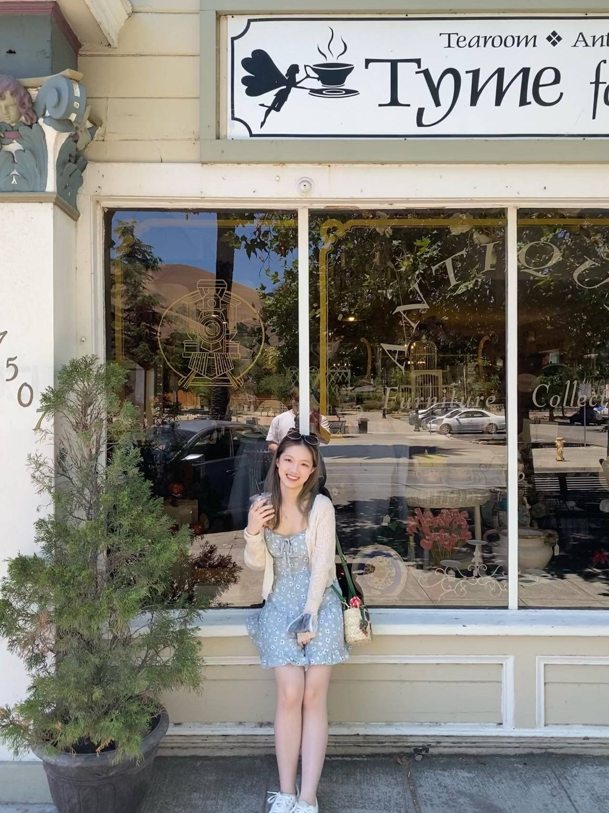

About
My name is Yanting Chen. I am now a second-year Master's student in Electrical Engineering at Northwestern University graduating in June 2023. Prior to Northwestern, I received my bachelor's degree in Electronic Information Science and Technology from Sun Yat-sen University.
I have gained knowledge of the full-stack workflow through internship and coursework experiences. My areas of expertise include Python, which has been my primary back-end language for three years, as well as front-end languages such as HTML, CSS, Django, and Javascript, in which I developed interests during my summer internship at Leopard Imaging Inc. in Fremont, California. There, my responsibility was to refactor and optimize proprietary functions in the manufacturing execution system with Django.